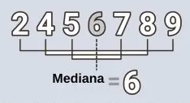
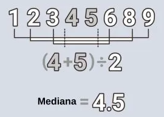

Aula 00 - Introdução e Apresentação de Dados
População: conjunto que contém todos os indivíduos, objetos ou elementos a serem estudados, que apresentam uma ou mais características em comum.
Amostra: subconjunto extraído da população para análise, devendo ser representativo daquele grupo.
Censo (ou recenseamento): estudo dos dados relativos a todos os elementos de uma população.
Amostragem: processo que consiste na seleção criteriosa dos elementos a serem submetidos à investigação.
Parâmetros: descrições numéricas de características populacionais que raramente são conhecidas.
Estatística (ou estimador): medidas numéricas obtidas de amostras representativas extraídas da população.
Apresentação de Dados
Tabela: deve apresentar os dados de modo resumido e seguro, oferecendo uma visão geral do comportamento do fenômeno. (forma tabular)
Gráfico: são representações visuais de dados e informações numéricas que servem para facilitar a interpretação destas.
Método Experimental x Método Estatístico
Método Experimental: consiste em manter constantes as causas (fatores), com exceção de uma, que é variada para que seus efeitos sejam descobertos.
Ex: Hormônio na academia, todos precisam ter as mesmas condições, alimentação, água e etc para testar.
Método Estatístico: admite e registra todas as possíveis variações das causas presentes, procurando determinar a influência de cada fator no resultado final.
Ex: Vacinação, pois consegue ver o resultado, e também pegar estatísticas sobre cada grupo.
Dados Estatísticos
Dados Brutos: são aqueles que não foram numericamente organizados em ordem crescente ou decrescente, ou seja, estão na forma como foram coletados.
Rol: é a organização dos dados brutos em ordem de grandeza crescente ou decrescente.
Variáveis Estatísticas
Variável: é a característica de interesse que é medida em cada elemento da amostra ou população.
Variável Quantitativa: são as características que podem ser medidas em uma escala quantitativa, ou seja, apresentam valores numéricos que fazem sentido.
Podem ser contínuas ou discretas.
Quantitativa Discreta: características mensuráveis que podem assumir apenas um número finito ou infinito contável de valores e, assim, somente fazem sentido valores inteiros.
Quantitativa Contínua: características mensuráveis que assumem valores em uma escala contínua (na reta real), para quais valores fracionais fazem sentido.
Variável Qualitativa: características que não possuem valores quantitativos, mas, ao contrário, são definidas por várias categorias, ou seja, representam uma classificação dos indivíduos. Podem ser nominais ou ordinais.
Qualitativa Nominal: não existe ordenação dentre as categorias.
Qualitativa Ordinal: existe uma ordenação entre as categorias.
Ex: grau de escolaridade, tamanho (P, M e G)

Séries Estatísticas
Série estatística: tabela que apresenta a distribuição de um conjunto de dados estatísticos em função da época, do local ou da espécie.
Temporal: dados são dispostos segundo a época. Enquanto o tempo varia, o fato e o local permanecem.
Geográfico: dados são dispostos segundo a localidade. Enquanto o local varia, o fato e o tempo permanecem.
Específicas: dados são dispostos segundo a modalidade. Enquanto o fato varia, a época e o local permanecem.
Mista: apresentação de valores de mais de uma variável.
Aula 01 - Médias
Medidas de Posição
As medidas de posição indicam a tendência de concentração dos elementos de uma série, apontando o valor que melhor representa o conjunto de dados.
As medidas de posição podem ser divididas em:
- medidas de tendência central: representam o ponto central ou o valor típico de um conjunto de dados, indicando onde está localizada a maioria dos valores de uma distribuição. As medidas mais utilizadas são:
- média aritmética: é o valor resultante da divisão entre a soma de todos os valores de uma série de observações e o número de observações;
- mediana: valor que ocupa a posição central de uma série de observações, quando organizadas em ordem crescente ou decrescente; e
- moda: valor mais frequente em uma série de observações.
- medidas separatrizes: dividem (ou separam) uma série em duas ou mais partes, cada uma contendo a mesma quantidade de elementos. As medidas mais utilizadas são:
- mediana: divide uma série em duas partes iguais. Reparem que, além de ser uma medida separatriz, a mediana também é uma medida de tendência central;
- quartis: dividem uma série em quatro partes iguais;
- decis: dividem uma série em dez partes iguais; e
- percentis: dividem uma série em cem partes iguais.

Notação de Somatório
O somatório ou notação sigma é usado para expressar de uma forma simples e concisa a soma dos valores de uma variável. Então, em vez de usarmos vários elementos para determinarmos o somatório, utilizamos apenas o símbolo do somatório com a seguinte notação:

Essa notação envolve um símbolo de somatório, 𝛴, que é a letra grega maiúscula Sigma (S). Esse símbolo está nos instruindo a somar determinados elementos de uma sequência.
Exemplos:
Média Aritmética Simples
É a média tradicional, aquela em que somamos os elementos e dividimos pela quantidade de elementos.
Exemplo: média simples entre 3, 7 e 14.
Média Ponderada
É a média que trabalha com pesos, com importância maior para alguns valores.
Exemplo:
| Valor | 6 | 5 | 4 |
| Peso | 4 | 3 | 3 |
Média para Dados Agrupados por Valor
O raciocínio é exatamente o mesmo adotado para a média ponderada, sendo que, agora, o peso é representado pela frequência (𝑓𝑖). Desse modo, multiplicamos cada valor por sua respectiva frequência, somamos tudo e dividimos pela soma das frequências.
A tabela a seguir apresenta os tempos de resolução de uma questão de estatística por um grupo de 10 alunos. Calcule o tempo médio de resolução para essa amostra.
| Tempo de Resolução (𝑿𝒊) | Frequência (𝒇𝒊) |
|---|---|
| 1 | 1 |
| 3 | 2 |
| 5 | 2 |
| 6 | 2 |
| 7 | 1 |
| 9 | 2 |
Primeiro, devemos multiplicar cada valor por sua respectiva frequência (𝑋𝑖 × 𝑓𝑖), somar cada parcela e, então, dividir pela soma das frequências
| Tempo de Resolução (𝑿𝒊) | Frequência (𝒇𝒊) | 𝑿𝒊 x 𝒇𝒊 |
|---|---|---|
| 1 | 1 | 1 x 1 = 1 |
| 3 | 2 | 3 x 2 = 6 |
| 5 | 2 | 5 x 2 = 10 |
| 6 | 2 | 6 x 2 = 12 |
| 7 | 1 | 7 x 1 = 7 |
| 9 | 2 | 9 x 2 = 18 |
| Total | 10 | 54 |
Agora, basta dividirmos um valor pelo outro, obtendo:
Média para Dados Agrupados por Classe
A diferença em relação ao cálculo anterior consiste na substituição dos intervalos pelos seus respectivos pontos médios.
A tabela a seguir também apresenta os tempos de resolução de uma questão de estatística por um grupo de 10 alunos, mas agora está organizada em intervalos de classes. Calcule o tempo médio de resolução para essa amostra.
| Tempo médio (𝑿𝒊) | Frequência (𝒇𝒊) |
|---|---|
| 0 ≤ 𝒙 < 2 | 1 |
| 2 ≤ 𝒙 < 4 | 2 |
| 4 ≤ 𝒙 < 6 | 2 |
| 6 ≤ 𝒙 < 8 | 3 |
| 8 ≤ 𝒙 < 10 | 2 |
O primeiro passo é o cálculo dos pontos médios de cada intervalo. Para isso, vamos incluir uma nova coluna:
| Tempo médio (𝑿𝒊) | Ponto médio (PM𝒊) | Frequência (𝒇𝒊) |
|---|---|---|
| 0 ≤ 𝒙 < 2 | (0 + 2)⁄2 = 1 | 1 |
| 2 ≤ 𝒙 < 4 | (2 + 4)⁄2 = 3 | 2 |
| 4 ≤ 𝒙 < 6 | (4 + 6)⁄2 = 5 | 2 |
| 6 ≤ 𝒙 < 8 | (6 + 8)⁄2 = 7 | 3 |
| 8 ≤ 𝒙 < 10 | (8 + 10)⁄2 = 9 | 2 |
Em seguida, vamos calcular os valores das multiplicações 𝑃𝑀𝑖 × 𝑓𝑖. Após isso, somaremos todos os valores da coluna 𝑃𝑀𝑖 × 𝒇𝒊
| Tempo médio (𝑿𝒊) | Ponto médio (PM𝒊) | Frequência (𝒇𝒊) | PM𝒊 x 𝒇𝒊 |
|---|---|---|---|
| 0 ≤ 𝒙 < 2 | 1 | 1 | 1 x 1 = 1 |
| 2 ≤ 𝒙 < 4 | 3 | 2 | 3 x 2 = 6 |
| 4 ≤ 𝒙 < 6 | 5 | 2 | 5 x 2 = 10 |
| 6 ≤ 𝒙 < 8 | 7 | 3 | 7 x 3 = 21 |
| 8 ≤ 𝒙 < 10 | 9 | 2 | 9 x 2 = 18 |
| Total | 10 | 56 |
Agora, basta dividirmos um valor pelo outro, obtendo:
Média Geométrica
Essa medida é definida, para o conjunto de números positivos, como a raiz 𝒏-ésima do produto de 𝒏 elementos de um conjunto de dados. A propriedade principal dessa média é preservar o produto dos elementos de um conjunto de dados.
Exemplo 1: Calcule a média geométrica entre 2 e 32.
Exemplo 2: Calcule a média geométrica entre 1, 2 e 32.
Média Harmônica
A média é calculada pela divisão de n (número de elementos) pela soma dos inversos dos elementos.
Exemplo: Calcule a média harmônica entre 2 e 3.
Aula 02 - Mediana
Mediana para dados não agrupados
A mediana é o elemento que ocupa a POSIÇÃO CENTRAL de uma série de observações ORDENADA segundo suas grandezas (isto é, dados brutos organizados em rol crescente ou decrescente).
Quando uma série possui um NÚMERO ÍMPAR de elementos, a MEDIANA SEMPRE COINCIDE com o ELEMENTO CENTRAL do conjunto de dados. Quando uma série possui um NÚMERO PAR de elementos, POR CONVENÇÃO, a MEDIANA é a MÉDIA ARITMÉTICA dos dois termos centrais.
Número ímpar de elementos

Número par de elementos

Mediana para dados agrupados sem intervalos de classe
O raciocínio adotado no cálculo da mediana para dados agrupados por valor (sem intervalos de classe) é similar ao empregado no caso dos dados não-agrupados. Basicamente, teremos que encontrar um valor que dividirá a distribuição de frequências em duas partes contendo o mesmo número de elementos.
Considere a tabela a seguir que apresenta o nível e satisfação dos clientes de determinada empresa. Os clientes puderam atribuir notas de 0 a 5 quanto ao nível de satisfação, resultando na seguinte distribuição de frequências:
| Nível de Satisfação (𝑿𝒊) | Frequência (𝒇𝒊) |
|---|---|
| 0 | 3 |
| 1 | 5 |
| 2 | 8 |
| 3 | 10 |
| 4 | 13 |
| 5 | 10 |
O total de clientes entrevistados foi de:
3 + 5 + 8 + 10 + 13 + 10 = 49.
Como o número de entrevistados é ímpar, 𝑛 = 49, a mediana será o termo que ocupa a posição de ordem:
A mediana será o elemento que ocupa a vigésima quinta posição. Para chegarmos a esse elemento, precisamos percorrer cada um dos níveis de satisfação.Para calcularmos a frequência acumulada, devemos repetir a primeira frequência e somar as frequências subsequentes, exibindo os resultados a cada linha.
| Nível de Satisfação (𝑿𝒊) | Frequência (𝒇𝒊) | Frequência Acumulada (𝒇𝒂𝒄) |
|---|---|---|
| 0 | 3 | 3 |
| 1 | 5 | 3 + 5 = 8 |
| 2 | 8 | 8 + 8 = 16 |
| 3 | 10 | 16 + 10 = 26 |
| 4 | 13 | 26 + 13 = 39 |
| 5 | 10 | 39 + 10 = 49 |
A coluna de frequências acumuladas torna possível calcularmos a mediana de forma praticamente imediata. Se 𝒏 for ímpar, basta identificarmos o valor da variável correspondente à primeira frequência acumulada imediatamente igual ou superior à posição de ordem 𝒏+𝟏/𝟐 ; e, se 𝒏 for par, basta identificarmos os dois valores correspondentes às frequências acumuladas imediatamente iguais ou superiores às posições de ordens 𝒏/𝟐 e 𝒏/𝟐 + 𝟏, respectivamente, e tirarmos a média aritmética desses dois valores.
A mediana será o valor da variável correspondente à primeira frequência acumulada maior ou igual a essa posição, portanto, 𝑀𝑑 = 3. Vejamos:
| Nível de Satisfação (𝑿𝒊) | Frequência (𝒇𝒊) | Frequência Acumulada (𝒇𝒂𝒄) |
|---|---|---|
| 0 | 3 | 3 |
| 1 | 5 | 8 |
| 2 | 8 | 16 |
| 3 | 10 | 26 (>25) |
| 4 | 13 | 39 |
| 5 | 10 | 49 |
Mediana para dados agrupados em classes
O raciocínio adotado no cálculo da mediana para dados agrupados em classes é muito similar ao empregado no tópico anterior. Agora, contudo, não nos importaremos com o número de elementos da série. Adotaremos um único procedimento de cálculo, independentemente de termos um número par ou ímpar de elementos.
Seja a distribuição de frequências descrita a seguir, que resume as idades de um grupo de 50 alunos:
| Idades | Frequência (𝒇𝒊) |
|---|---|
| 23 ⊢ 26 | 3 |
| 26 ⊢ 29 | 4 |
| 29 ⊢ 32 | 10 |
| 32 ⊢ 35 | 13 |
| 35 ⊢ 38 | 10 |
| 38 ⊢ 41 | 6 |
| 41 ⊢ 44 | 4 |
| TOTAL | 50 |
A etapa inicial do cálculo da mediana consiste na construção da coluna de frequências acumuladas:
| Idades | Frequência (𝒇𝒊) | Frequência Acumulada (𝒇𝒂𝒄) |
|---|---|---|
| 23 ⊢ 26 | 3 | 3 |
| 26 ⊢ 29 | 4 | 7 |
| 29 ⊢ 32 | 10 | 17 |
| 32 ⊢ 35 | 13 | 30 |
| 35 ⊢ 38 | 10 | 40 |
| 38 ⊢ 41 | 6 | 46 |
| 41 ⊢ 44 | 4 | 50 |
| TOTAL | 50 | 50 |
Para calcular a mediana de dados que estão agrupados por intervalo de classes, precisamos identificar a classe em que se encontra a mediana, a chamada classe mediana, que corresponde à frequência acumulada imediatamente igual ou superior à metade da frequência total, ou seja, metade da soma das frequências simples. Em nosso exemplo, temos: 50 / 2 = 25
Agora, devemos comparar o valor encontrado com os valores presentes na coluna de frequências acumuladas, percorrendo-os de cima para baixo. A classe mediana será a primeira classe em que a frequência acumulada for igual ou superior a 25. Observando a tabela, percebemos que a quarta classe tem frequência acumulada 30, portanto, é maior que 25. Logo, encontramos a classe mediana. Ela se encontra na quarta classe, isto é, no intervalo entre 32 e 35.
Aula 03 - Moda
A moda é o valor com maior frequência (que mais se repete).
Moda
Amodal
Quando todos os elementos apresentam a mesma frequência, isto é, quando todos aparecem o mesmo número de vezes. Exemplo:
2, 2, 3, 3, 4, 4, 5, 5, 6, 6, 9, 9 = amodal
Unimodal
Possui elemento com maior frequência
Exemplo:
4, 4, 4, 8, 8, 9, 9 = 4
Bimodal
quando as frequências de três ou mais elementos são iguais e maiores que as frequências dos demais elementos. Exemplo:
2, 2, 2, 2, 3, 3, 4, 5, 5, 5, 6, 6, 6, 6, 9, 9 = 2, 6
Plurimodal ou Multimodal
Auando as frequências de três ou mais elementos são iguais e maiores que as frequências dos demais elementos. Exemplo:
2, 2, 2, 2, 2, 3, 4, 5, 5, 5, 5, 5, 6, 6, 6, 6, 6, 9, 9 = 2, 5, 6
Moda para dados agrupados sem intervalos de classe
| Idade | Frequência Absoluta |
|---|---|
| 20 | 2 |
| 25 | 8 |
| 30 | 10 |
Moda = 30 - Possui a maior frequência.